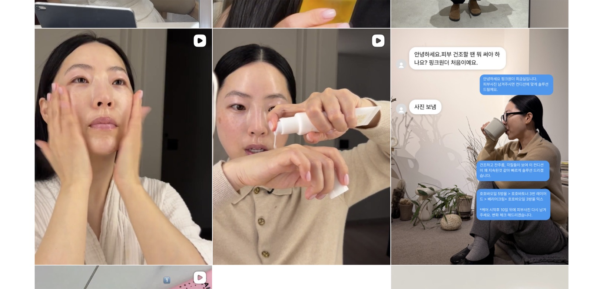

먼저, 누구에게 무엇으로 팔지
포지셔닝 · 타겟 · 소구점
고객이 예상한 공사비와 실제 견적의 차이
질문 — 기존 포트폴리오를 보여 주면서 더 큰 규모의 전체공사를 어떻게 받아야 할까요?
오브의 기존 고객은 보통 7~8천만 원대였고, 포트폴리오도 대부분 1억 원 미만의 공사입니다. 그런데 자재비와 인건비가 올라 지금은 예전 금액으로 같은 공사를 하기 어렵습니다. 수현님이 앞으로 받고 싶은 전체공사는 최소 1억 3천만 원 정도입니다. 수현님에게는 높아진 원가를 반영한 금액이지만, 고객은 아직 그 변화를 모르고 사진부터 봅니다.
그래서 같은 사진을 두고도 예상하는 가격이 달라집니다. 고객은 5~7천만 원이면 될 거라고 생각하고 문의하고, 수현님은 현재 원가와 고객이 요청한 범위를 넣어 견적을 냅니다. 상담에서 반복해서 나온 문제도 바로 이 간격입니다. 필요한 비용을 견적을 받은 뒤에야 알게 되니, 서로 시간을 쓴 다음 예산이 맞지 않는다는 것을 확인하게 됩니다.
이 간격을 줄이려면 고객이 사진만 보고는 알 수 없는 공사 범위를 먼저 설명해야 합니다. 같은 평수라도 철거와 구조 변경을 얼마나 하는지, 제작 가구와 마감재는 무엇인지, 가구·가전까지 포함하는지에 따라 금액이 달라집니다. 과거 사진에는 지금과 다른 원가도 반영돼 있습니다. 사례의 금액을 보여 줄 때 시공 시점과 포함 범위를 함께 써야 하는 이유입니다.
문안 예시이 사례는 [시공 시점]에 진행한 [공사 범위] 프로젝트입니다. 당시 비용에는 [포함 항목]이 들어 있고 [제외 항목]은 포함되지 않았습니다. 현재 공사비는 현장 상태와 선택 범위에 따라 달라지므로, 요청하신 내용을 확인한 뒤 적용 범위를 안내드립니다.
이렇게 과거 사례의 조건을 알려 준 다음, 현재 어떤 공사를 어느 정도 예산으로 맡는지 안내하면 됩니다. 앞으로의 전체공사 가격대는 면적과 범위별 원가를 계산해 정하고, 부분공사와 홈스타일링은 따로 구분하세요. 그러면 고객도 “예쁜 사진 속 집”과 “내가 지금 맡기려는 공사”의 차이를 알 수 있습니다.
오브에 맞는 고객은 누구인가
질문 — 오브가 먼저 만나야 할 고객은 어떤 사람일까요?
가격대를 미리 안내하면 예산이 맞지 않는 문의를 줄일 수 있습니다. 그렇다고 예산이 있는 사람 모두가 오브의 고객이 되는 것은 아닙니다. 그중에서도 원하는 생활과 공간은 있지만, 자기 집과 예산에서 어떻게 구현할지 전문가의 도움이 필요한 사람을 만나야 합니다. 이 고객은 “어떤 자재를 쓸까요?”와 함께 “어디에 돈을 쓰고 무엇을 조정할까요?”를 묻습니다.
입주를 앞둔 고객이라면 “아이 물건은 계속 늘어나는데 수납을 어떻게 만들지?”가 고민일 수 있습니다. 살던 집을 바꾸는 고객은 “지금 쓰는 가구는 남기고 싶은데 동선이 불편하다”고 느낄 수 있고, 큰 공사가 필요 없는 고객은 “가구와 조명을 따로 골랐더니 집이 어수선해 보인다”고 고민할 수 있습니다. 이런 구체적인 불편에서 콘텐츠를 시작해야 고객이 자기 이야기라고 느낍니다.
아래는 콘텐츠로 풀어 볼 고객의 상황입니다. 오브가 실제로 해결한 프로젝트부터 골라, 고객이 무엇 때문에 찾아왔고 수현님이 어떻게 해결했는지 보여 주세요.
| 고객의 출발 상황 | 고객이 도움을 구하는 부분 | 오브가 보여 줄 자료 |
|---|---|---|
| 이사·입주를 앞두고 기존 구조가 생활에 맞지 않음 | 가족의 동선·수납·공간 용도 | 기존 상태, 고객 요구, 바꾼 이유, 완성된 사용 공간 |
| 원하는 사진은 있지만 모든 요소를 그대로 적용하기 어려움 | 분위기의 핵심과 예산의 우선순위 | 유지한 요소, 조정한 재료·공정, 결과의 차이 |
| 가구와 조명을 각각 골랐으나 전체 조합이 어려움 | 크기·빛·배치·색의 균형 | 공간 조건과 제품 선택이 연결된 사례 |
| 큰 공사라 무엇부터 정해야 할지 막막함 | 먼저 정할 것, 필요한 비용과 일정 | 선택 과정, 포함·제외 범위, 변경 안내 방식 |
이렇게 고객의 상황을 정하면 무엇을 설명해야 할지도 달라집니다. 수납이 고민인 가족에게는 수납과 동선을 해결한 사례가, 원하는 분위기와 예산 사이에서 고민하는 고객에게는 무엇을 지키고 조정했는지 보여 주는 사례가 필요합니다. 그 사례를 보고 “우리 집도 이 사람에게 맡기고 싶다”는 생각이 들어야 합니다.
예쁜 사진 다음에 오브를 선택할 이유
질문 — 고객은 왜 여러 업체 가운데 오브에 공사를 맡길까요?
그렇다면 고객이 자기 문제와 비슷한 사례를 찾았을 때, 무엇을 더 보여 줘야 맡기고 싶어질까요? 완성 사진으로는 “이런 집에서 살고 싶다”는 관심을 만들 수 있습니다. 하지만 큰돈을 맡기려면 “우리 집에서도 이렇게 해 줄 수 있을까?”, “내가 뭘 원하는지 이해해 줄까?”라는 질문에도 답이 있어야 합니다. 고객의 요구를 읽고 설계로 옮긴 과정이 그 답입니다.
수현님이 이야기한 기존 고액 고객의 선택 과정에도 이 단서가 있습니다. 다른 업체와 상담하며 비용 수준을 알고 있던 고객이, 오브가 원하는 디자인을 구현할 수 있다고 보고 맡겼습니다. 가격만 본 것이 아니라 그 비용으로 자신의 요구를 충족할 수 있는지를 본 것입니다.
그래서 프로젝트를 소개할 때는 고객이 처음 원한 생활, 기존 공간의 불편, 그 문제를 해결하려고 바꾼 부분을 함께 설명해야 합니다. 고객이 “사진이 예쁘다”에서 “이 사람이라면 우리 집 문제도 해결해 주겠다”로 넘어가게 하는 설명입니다.
다만 어떤 설명이 실제로 마음을 움직였는지는 고객에게 확인해야 합니다. “만족하셨나요?”에서 끝내지 말고, 공사를 시작한 이유와 비교한 업체, 오브에 맡기기로 결정한 순간을 물어보세요. 그 답을 알면 수현님이 중요하다고 생각한 점과 고객이 실제로 선택한 이유를 맞춰 볼 수 있습니다.
- 공사를 알아보기 시작한 직접적인 계기는 무엇이었나요?
- 당시 어떤 방법이나 업체를 비교했고, 각각 무엇이 아쉬웠나요?
- 오브에 맡기기 전 가장 걱정한 점은 무엇이었나요?
- 어떤 설명이나 자료를 본 뒤 맡겨도 되겠다고 생각했나요?
- 완공 뒤 생활에서 달라진 점과 여전히 아쉬운 점은 무엇인가요?
여러 고객이 같은 이유로 찾아왔다면 그 이유를 다음 콘텐츠의 앞에 놓으세요. 반복해서 나온 걱정은 홈페이지에서 먼저 답할 질문이 됩니다. 이렇게 고객의 선택 이유를 알아야, 사람들이 많이 보는 정보와 오브에 맡기고 싶게 만드는 정보를 구별할 수 있습니다. 함께 보내 드리는 실행 양식의 고객 선택 이유 카드에 답을 모아 두세요.
디아망을 말하면서 가격 비교를 벗어나는 콘텐츠
질문 — 같은 자재를 쓰는데, 고객은 왜 오브에 더 큰 비용을 지불해야 할까요?
이 차이를 상담에서 이야기한 디아망 벽지로 살펴보겠습니다. 고객이 “벽지는 디아망으로 해야겠다”고 이미 정했다면, 다음 질문은 “어디서 얼마에 해주지?”입니다. 업체마다 무엇이 다른지 모르면 같은 벽지를 쓰는 곳은 다 비슷해 보입니다. 결국 비교하기 쉬운 금액이 선택 기준으로 남습니다. (네, 더 싼 곳을 선택한다는 이야기죠.)
그래서 “디아망이 좋다”, “이 벽지를 선택하세요”로 끝나면 고객에게는 “그 자재를 써야겠다”는 생각만 남습니다. 정작 “왜 오브에 맡겨야 하지?”라는 질문에는 답하지 못합니다. 고객이 아는 차이가 자재 이름뿐이면, 같은 자재를 쓰는 업체 중 싼 곳부터 찾게 됩니다.
같은 디아망도 어디에 무엇과 쓰는가
디아망 이야기를 그만할 필요는 없습니다. “디아망이면 어느 집에나 잘 어울릴까요?”, “같은 벽지인데 왜 사진에서 본 분위기가 우리 집에서는 나오지 않을까요?”처럼 자재 이름만으로 해결되지 않는 질문을 던지면 됩니다.
고객이 원하는 분위기와 집의 조건을 보고 벽지·바닥·가구·조명을 어떻게 골랐는지 보여 주세요. 같은 디아망을 쓰더라도 어디에 무엇과 함께 쓰고, 왜 그 조합을 골랐는지가 중요합니다. 이런 설명이 있어야 고객은 벽지 값뿐 아니라 수현님의 선택과 설계에도 비용을 지불할 이유를 이해합니다.
같은 이름의 시술을 150만 원과 450만 원에 안내한다면
그런데 고객이 자재 값과 별도로 전문가의 판단에 돈을 쓰려면, 그 판단이 왜 필요한지 이해해야 합니다. 피부과를 고르는 상황을 떠올리면 이 차이가 더 잘 보입니다. 레이저 제모나 울쎄라·써마지를 알아보는 고객은 먼저 장비나 시술 이름과 가격을 비교합니다. 같은 이름의 시술이고 같은 장비와 팁을 쓴다고 생각하면 병원별 차이를 알기 어렵습니다.
예를 들어 같은 이름의 시술을 한 병원에서는 이벤트로 150만 원, 다른 병원에서는 450만 원에 안내한다고 해보죠. “같은 시술인데 왜 세 배나 비싸지?”라는 생각이 들 겁니다. 그런데도 450만 원을 선택하는 고객은 왜 그 병원에 돈을 더 내는 걸까요?
고객이 그 가격 차이를 이해하도록, 이런 병원들은 “좋은 장비가 있습니다” 다음의 이야기를 합니다. “턱라인을 끌어올리는 것이 모든 얼굴형의 정답일까요?”라는 질문을 던지고, 고객의 얼굴과 원하는 변화에 따라 무엇을 다르게 판단하는지 보여 줍니다. 같은 장비와 팁을 쓴다고 생각하던 고객에게 누가 내 얼굴을 보고 어떻게 판단하고 시술하느냐가 왜 중요한지 설명하는 것입니다.
이 설명을 읽은 고객의 질문은 달라집니다. “어차피 같은 기계인데 싼 곳으로 가면 되지 않을까?”에서 “이 사람은 내 얼굴에 맞게 판단해 줄까?”로 바뀝니다. 잘못된 선택으로 원하지 않는 결과가 나오면, 처음 쓴 돈을 버리는 데서 끝나지 않고 수습하는 데 더 큰 돈과 시간이 들까 봐 걱정하기 때문입니다. 450만 원을 선택하는 고객은 그 병원의 콘텐츠에서 자신의 얼굴을 맡겨도 되겠다는 신뢰를 얻은 것입니다.
“하루에 세 명만 시술합니다”라는 설명
그 판단에 충분한 시간을 쓴다는 점을 운영 방식으로 설명하는 예도 있습니다. “저희 병원은 하루에 세 명 이상 시술하지 않습니다. 저렴하게 많은 분을 받기보다 한 분의 얼굴을 충분히 보고, 계획하고, 시술하는 데 시간을 쓰기 위해서입니다.”라는 콘텐츠가 그런 예입니다.
고객은 이 이야기를 읽고 가격 차이를 이해합니다. 한 사람에게 충분히 시간을 쓰는 방식과, 저렴한 가격으로 많은 사람을 받는 방식은 다르다는 것입니다. “저희는 꼼꼼합니다”라는 말보다 “왜 하루 세 명만 받는가”라는 구체적인 이야기가 그 병원이 일하는 방식을 더 쉽게 이해시킵니다.
오브의 콘텐츠에 옮기는 방법
인테리어도 같습니다. “같은 벽지를 쓰니까 결과도 같겠지”라고 생각하는 고객에게, 그 벽지를 어디에 무엇과 쓰고 어떤 공간으로 완성하느냐가 다르다는 것을 보여 줘야 합니다. 그래야 고객이 수현님의 판단과 설계에 왜 비용을 지불해야 하는지 이해합니다.
오브의 콘텐츠도 “디아망 벽지 추천 색상”에서 한 발 더 들어가면 됩니다. “디아망을 원한 고객에게도 벽지부터 고르지 않은 이유”라는 제목으로, 그 고객이 원한 분위기와 함께 쓸 바닥·가구·조명을 보여 주세요. 그리고 수현님이 무엇을 선택하고 무엇을 바꿨는지 설명하면 됩니다.
콘텐츠 문안 예시요즘 디아망 벽지가 가장 핫하죠. 이 고객님도 처음에는 디아망 벽지를 원하셨습니다. 하지만 저희가 먼저 확인한 것은 [실제 생활 요구·원하는 분위기]였습니다. [기존 공간의 조건]과 [함께 사용할 바닥·가구·조명]을 함께 검토한 뒤 [실제 선택]을 했고, 그 이유는 [고객 요구와 연결되는 판단]이었습니다. 같은 자재를 쓰더라도 이 집에 어떤 역할로 사용할지를 먼저 정했습니다.
위 문안에는 실제 현장의 선택과 이유를 채워 주세요. 고객이 “디아망으로 하면 얼마예요?”에서 “우리 집은 어떻게 조합하고 어디에 예산을 써야 할까요?”를 묻게 만드는 것이 목표입니다. 그 질문에 답하는 일이 오브의 설계와 디렉팅입니다.
그래도 “그런 과정은 필요 없고, 정해진 사양을 가장 싸게 해주는 곳이면 된다”고 하는 고객은 있습니다. 그 고객은 오브가 만나려는 고객이 아닙니다. 수현님의 설계와 디렉팅이 필요한 고객에게 그 가치를 설명해야 합니다. 모든 사람을 잡으려고 가격을 낮추고 제공 범위를 늘리면, 수현님은 다시 더 싸게 해주는 업체와 경쟁하게 됩니다.
이 설명을 읽고 가격을 보면 고객은 “벽지와 공사비가 왜 이렇게 비싸지?”에서 “이런 설계와 진행까지 맡기는 비용이구나”로 이해할 수 있습니다. 콘텐츠에서 오브를 선택할 이유를 보여 주고, 홈페이지에서 그 이유와 필요한 예산을 충분히 설명하세요.
공사와 홈스타일링을 하나의 공간으로 설명하기
질문 — 오브 디자인과 오브 셀렉트는 어떻게 연결해 보여 줘야 할까요?
오브가 보여 줄 이런 판단은 벽지나 공사에만 한정되지 않습니다. 어떤 가구와 조명을 함께 놓을지까지 이어져야 고객이 원한 공간이 완성됩니다. 수현님은 피드가 산만해 보일까 봐 공사와 가구·조명 계정을 나눴지만, 고객은 그 둘을 합친 자기 집의 모습을 기대합니다.
구조와 마감부터 바꿔야 하는 집에는 공사가 필요합니다. 기본 인테리어는 괜찮은데 가구·조명·커튼이 어울리지 않는 집에는 홈스타일링이 필요합니다. 어떤 고객에게 무엇을 권하는지 보여 주면, 오브 셀렉트의 안목도 공사를 맡길 이유와 연결됩니다.
그래서 두 계정을 당장 합치는 것보다 각각의 콘텐츠에 같은 관점을 담는 일이 먼저입니다. 오브 디자인에는 공사하면서 가구와 조명까지 어떻게 정했는지 보여 주고, 오브 셀렉트에는 제품을 어떤 공간과 생활에 맞춰 고르는지 설명해 보세요. 이 일을 가장 구체적으로 보여 줄 수 있는 자료가 이미 진행한 프로젝트입니다.
완성 사진에 비포와 선택 이유를 붙이기
질문 — 아직 원하는 규모의 공사 사례가 많지 않은데 무엇을 콘텐츠로 보여 줄까요?
그 프로젝트를 처음 보는 고객에게 보여 준다고 생각해 보세요. 완성 사진만으로는 “이렇게 바뀌었구나”는 알 수 있어도 원래 무엇이 불편했고 수현님이 어떤 일을 했는지는 알기 어렵습니다. 완성 사진 바로 다음에 비포를 놓고, 고객의 문제와 수현님의 선택을 설명해 주세요. 그래야 고객이 자기 집과 비교하면서 읽을 수 있습니다.
욕조를 자주 쓰는 고객을 위해 설계한 욕실이 좋은 예입니다. 매립 수납장 때문에 생긴 단차에 오르내리기 위한 계단을 계획했다면, 완성 사진과 함께 그 이유를 설명하세요. “예쁜 욕실을 만들었습니다”에서 끝내는 것보다 고객이 욕실을 어떻게 쓰는지 살피고 설계했다는 점이 잘 드러납니다. 비포·도면·완성 사진을 연결하고, 실제 사용 후기는 고객에게 물어 덧붙이면 됩니다.
이 욕실을 캐러셀로 만들면 아래 순서로 보여 줄 수 있습니다. 대괄호에는 해당 현장에서 확인한 요구와 선택을 넣어 주세요.
| 장 | 화면 | 문안 예시 |
|---|---|---|
| ① | 완성된 욕실 | 욕조를 자주 쓰는 집의 욕실을 설계할 때 |
| ② | 실제 비포 또는 기존 도면 | 이 집에서 먼저 확인한 조건은 [기존 상태와 실제 불편]이었습니다. |
| ③ | 고객 요구와 설계 메모 | [확인된 사용 방식]을 고려해 욕조 주변의 이동과 수납을 함께 살폈습니다. |
| ④ | 단차·계단 상세 | 매립 수납장 때문에 생긴 단차에는 오르내리기 위한 계단을 계획했습니다. |
| ⑤ | 실제 검토안과 선택 결과 | [검토한 선택지] 가운데 [실제 이유]로 이 구성을 정했습니다. |
| ⑥ | 완성 상세와 사용 장면 | [확인된 완성 결과와 사용 경험] |
| ⑦ | 프로젝트 조건과 상담 안내 | [시공 시점·공사 범위·비용 안내 방식]. 바꾸고 싶은 생활과 예산 범위를 알려 주세요. |
첫 장의 완성 사진으로 관심을 끌고, 두 번째 장의 비포로 “우리 집도 이런데”라는 생각이 들게 합니다. 다음 장부터 왜 그렇게 바꿨는지 설명하면 수현님의 전문성이 보입니다. 비포 사진이 없으면 기존 도면이나 현장 기록으로 원래의 문제를 보여 주세요.
원하는 공간 사진으로 보여 주는 전문성
질문 — 원하는 가격대의 포트폴리오가 쌓이기 전에는 어떤 전문성을 보여 줄 수 있을까요?
이렇게 기존 프로젝트에서 수현님의 선택을 꺼내면 지금 가진 사례로도 설명할 것이 생깁니다. 다만 앞으로 받고 싶은 규모나 유형의 공사는 아직 보여 줄 사례가 부족할 수 있습니다. 그때는 고객이 저장한 공간 사진으로 “왜 이 주방은 깔끔해 보일까?”, “이 분위기를 우리 집에 만들려면 무엇을 확인해야 할까?”를 풀어 주세요. 원하는 규모의 시공 사례가 쌓일 때까지 전문성 설명을 미룰 필요는 없습니다.
주방 사진 한 장을 보고 아래처럼 설명할 수 있습니다. 다른 업체의 사진이라면 레퍼런스임을 밝히고, 게시에는 사용 가능한 자료를 쓰세요.
문안 예시이런 주방을 원할 때는 사진에서 무엇을 가져오고 싶은지부터 나눠 봐야 합니다. 이 공간의 인상을 만드는 요소는 [실제 요소 A], [요소 B], [요소 C]입니다.
예산이 정해져 있다면 [핵심 요소]를 먼저 지킬지 확인하겠습니다. [대체 후보]는 [달라지는 점]이 있으므로 [고객의 공간 조건]에 맞을 때 검토할 수 있습니다.
실제 비용은 규격과 현장 상태를 봐야 정할 수 있습니다. 원하는 사진과 함께 집에서 꼭 지키고 싶은 생활을 알려 주시면, 그 조건부터 살펴보겠습니다.
이 영상을 본 고객은 “이 사진처럼 해주세요”에서 “나는 이 부분이 좋은데 우리 집에도 가능할까요?”라고 구체적으로 물을 수 있습니다. 수현님은 그 요구를 듣고 무엇을 지키고 어디를 바꿀지 설명하게 됩니다. 실행 양식에는 주방 레퍼런스와 가구·조명을 다루는 영상 대본을 넣었습니다.
사진 색감보다 반복할 콘텐츠 형식
질문 — 현장 사진마다 다른 이야기를 어떻게 일정한 방식으로 보여 줄까요?
프로젝트 사례와 레퍼런스 해석을 콘텐츠로 만들기 시작하면, 서로 다른 사진을 어떻게 한 계정 안에서 보여 줄지가 다음 고민입니다. 그때 사진 색감을 모두 맞추기보다 설명하는 형식을 반복해 보세요. “고객이 원한 것 → 원래 집의 문제 → 수현님의 선택 → 완성된 모습”이 반복되면 사진이 달라도 오브가 일하는 방식이 기억에 남습니다.
고객의 질문을 카드로 보여 주고 다음 장에 비포와 도면을 놓아도 됩니다. DM 대화창처럼 “수납은 늘리고 싶은데 집은 답답해 보이지 않았으면 좋겠어요”라는 요구를 먼저 보여 준 뒤, 배치와 재료를 어떻게 정했는지 설명해도 됩니다. 형식이 반복되면 고객은 오브가 어떤 문제를 어떻게 해결하는 곳인지 기억합니다.
코멜 캐러셀 스튜디오에서는 DM 대화창, 질문 카드, 블로그 화면을 사진 위에 바로 얹을 수 있습니다. 아래 이미지는 형식을 적용한 예시이며, 실제 게시물의 내용은 오브 프로젝트에서 확인한 요구와 선택으로 채워 주세요.



이렇게 만든 사례와 설명은 게시물로도 쓰고, 홈페이지에서 오브를 소개할 자료로도 쓸 수 있습니다. 이제 준비한 자료를 광고로 들어온 고객에게 어떤 순서로 보여 줘야 상담까지 이어지는지 살펴보겠습니다.
그 위에, 퍼포먼스와 브랜드 마케팅
퍼포먼스 마케팅 · 브랜드 마케팅
광고 뒤에 필요한 신뢰와 전환
질문 — 광고를 잘 만들면 큰 공사를 맡길 고객까지 설득할 수 있을까요?
사례와 설명을 준비했다고 해서 광고 한 편에 그 내용을 모두 담을 수는 없습니다. 인테리어는 많은 돈과 시간을 쓰고 쉽게 되돌리기 어려운 고관여 서비스이기 때문입니다. 익숙하고 구매 부담이 작은 저관여 상품은 짧은 광고를 보고 바로 살 수도 있지만, 집 전체를 바꾸려는 고객에게는 확인할 것이 훨씬 많습니다. 내 생활을 이해하는지, 원하는 결과를 만들 수 있는지, 왜 그 비용이 드는지까지 납득해야 합니다.
Meta 광고의 짧은 영상과 이미지는 시선을 끌고 페이지로 데려오는 역할을 합니다. 그 뒤에도 “우리 집과 비슷한 사례가 있나?”, “무엇까지 해주나?”, “내 예산으로 가능한가?”라는 질문이 남습니다. 이 답을 페이지에 준비하지 않으면 고객은 그냥 나가거나, 수현님이 상담에서 처음부터 설명해야 합니다.
마케팅을 단순하게 나누면 유입 → 신뢰 → 전환입니다. 유입에서는 콘텐츠 주제와 광고 소재를 바꿔 보면서 무엇이 관심과 클릭을 만드는지 테스트합니다. 신뢰와 전환에서는 들어온 사람이 오브를 선택할 이유와 필요한 예산을 이해하고 상담을 신청하도록 준비해야 합니다.
지금까지 만든 피드와 릴스, 블로그 글에도 그 신뢰를 줄 후기와 포트폴리오가 들어 있습니다. 그런데 고객이 글들을 필요한 순서대로 읽어 주지는 않습니다. 사례는 피드에서, 자세한 설명은 블로그에서, 비용과 진행 방식은 또 다른 글에서 찾아야 한다면 고객이 직접 여러 화면을 돌아다니며 정보를 모아야 합니다.
고객이 그 수고를 끝까지 해 줄까요? 벽지 영상 하나를 보고 들어왔는데 다음 글은 가구 이야기이고, 정작 공사 범위와 예산은 찾기 어렵다면 문의를 미루거나 다른 업체로 넘어갑니다. 자료가 많이 있는 것과, 처음 온 고객이 오브를 이해하고 상담할 수 있는 것은 별개입니다.
홈페이지나 상세페이지에서는 ‘내 상황을 이해하는 곳인가 → 믿을 사례가 있는가 → 왜 이 비용이 드는가 → 내 예산과 맞는가 → 어떻게 상담하는가’를 한 흐름으로 설명할 수 있습니다. 광고 소재를 계속 바꾸기 전에, 들어온 고객이 이 질문에 답을 얻을 페이지부터 준비하세요. 페이지를 만든 뒤에는 실제 고객이 어디서 나가는지, 어떤 질문을 하는지 보면서 고치면 됩니다.
이 페이지가 먼저 만들어야 할 결과는 오브를 이해한 고객의 상담 신청입니다. 그 뒤 실제 범위를 확인하고 견적을 내서 계약으로 이어지는지까지 따로 보면 됩니다. 그렇다면 실제로 이렇게 설명과 가격을 한 페이지에 모아 고객을 받는 곳은 어떻게 운영할까요?
가격을 먼저 보여 주는 이유
질문 — 최종 견적이 모두 다른 업에서도 미리 예산을 안내할 수 있을까요?
그 사례가 상담에서 말씀드렸던 노페일디자인입니다. 아래 홈페이지의 메인페이지가 대표가 Meta 광고를 집행할 때 연결하는 랜딩페이지입니다. 광고를 누른 고객이 이 안에서 회사의 설명과 사례, 대략적인 가격을 읽고 상담을 신청하게 되어 있습니다.
홈페이지 제작 시장도 인테리어와 비슷합니다. 요즘은 100만 원 이하로 홈페이지를 만들어 주는 곳도 굉장히 많습니다. 저가 경쟁으로 가격 기준이 무너졌고, 고객은 같은 홈페이지 제작인데 왜 어디는 100만 원도 안 받고 어디는 몇백만 원을 받는지 잘 모릅니다. 얼마를 써야 적당한지도 모르니, 눈에 보이는 가격부터 비교하게 됩니다.
노페일디자인은 그보다 높은 가격을 받으면서도 금액을 공개합니다. 현재 메인페이지에는 회사 홈페이지 제작을 420만 원으로 안내하고 있습니다. 페이지를 추가하거나 제작 범위가 늘어나면 비용도 더 늘어납니다. 홈페이지 제작 역시 기획·디자인·기능·페이지 수에 따라 최종 금액이 달라지는 맞춤 서비스입니다.
노페일 대표는 다른 모객 창구 없이 Meta 광고만으로 원하는 예산의 고객을 모으고 있습니다. 100만 원 이하를 생각한 고객은 페이지에서 가격을 보고, 애초에 상담을 넣지 않습니다. 반면 몇백만 원을 쓸 예산과 의향이 있는 고객은 제공 가치와 사례를 읽고 상담을 신청합니다. 전체 상담 수는 적을 수 있지만, 예산이 맞지 않는 고객을 상담하고 견적을 만드는 시간이 줄어든 것입니다.
상담에서 소개한 노페일디자인대표가 Meta 광고에서 연결하는 메인페이지. 가치·사례·가격 안내와 상담 흐름을 함께 확인해 보세요.nofaildesign.com오브도 같은 상황입니다. 고객은 완성 사진을 보고 5~7천만 원이면 될 거라고 생각하지만, 수현님은 도면을 받고 수량을 계산한 뒤에야 그 예산으로는 어렵다는 이야기를 하게 됩니다. 고객이 문의 전에 대략적인 금액을 알았다면 서로 쓰지 않아도 될 시간입니다.
최종 견적이 집마다 달라도 상담하려면 어느 정도 예산을 생각해야 하는지는 미리 알려 줄 수 있습니다. 어떤 면적과 범위의 공사인지, 가구·가전은 포함인지 함께 쓰면 됩니다. 그 금액을 쓸 예산이나 생각이 없는 고객은 상담 전에 판단하고, 맞는 고객은 비용을 이해한 상태에서 찾아옵니다.
공개할 금액은 현재 원가와 수익성을 계산해 정하세요. 전체공사·부분공사·홈스타일링은 필요한 예산이 다르니, 각각 무엇을 맡길 수 있고 어느 정도 비용이 드는지 안내해야 합니다.
가격을 안내할 때는 어디까지 포함하는지 함께 써 주세요. 현장 상태나 고객의 선택 때문에 비용이 달라지면 이유와 추가 금액, 일정에 미치는 영향을 설명하고 결정받으면 됩니다.
오브의 페이지는 아래 순서로 만들면 됩니다. 상담을 결정하는 데 필요한 설명은 그 안에서 읽게 하고, 더 많은 현장은 블로그나 인스타그램으로 이어 주세요.
| 페이지의 자리 | 고객이 확인할 것 | 오브에 넣을 내용 |
|---|---|---|
| 첫 화면 | 내 집의 일을 맡길 수 있는 곳인가 | 해결하는 공간 요구와 상담 버튼 |
| 대표 사례 | 비슷한 조건에서 무엇을 바꿨는가 | 고객 요구, 비포, 설계 선택, 완성 |
| 제공 범위 | 공사와 스타일링 중 무엇이 맞는가 | 현재 신청 가능한 서비스와 포함 범위 |
| 비용 안내 | 예상 예산과 공사 범위가 맞는가 | 대략적인 예산 수준, 적용 조건, 포함·제외 범위 |
| 진행 방식 | 문의 뒤 무엇을 확인하는가 | 자료 접수, 범위 확인, 상담·견적 단계 |
| 신청 | 무엇을 보내면 다음 단계로 가는가 | 짧은 질문과 제출 확인 |
첫 화면에는 “원하는 공간을, 우리 집의 생활에 맞게”처럼 어떤 도움을 주는지 써 보세요. 바로 아래에는 그 말을 보여 줄 프로젝트가 있어야 합니다. 고객이 무엇 때문에 불편했고 수현님이 어떻게 바꿨는지가 없으면, ‘맞춤 디자인’은 어느 업체나 하는 말로 보입니다.
매일의 콘텐츠에만 의존하지 않는 마케팅
질문 — 콘텐츠를 쉬는 동안에도 고객이 찾아올 구조를 만들 수 있을까요?
고객을 설득할 페이지가 준비되면 모객을 매일의 콘텐츠에만 맡기던 운영도 바꿀 수 있습니다. 저도 이전에는 인스타그램이 유일한 마케팅 창구였습니다. 매일 무엇을 올릴지 고민했고, 콘텐츠를 멈추면 고객도 안 들어올까 봐 불안했습니다. 매번 다음 매출을 위해 새 콘텐츠를 만들어야 하는 숙제처럼 느껴졌습니다.
이런 운영에서는 콘텐츠를 만드는 일을 쉬기가 어렵습니다. 그 부담을 줄이려면 새 게시물을 올리지 않는 날에도 광고로 고객이 들어오고, 들어온 사람이 서비스의 가치를 이해하고 구매를 결정할 곳이 필요합니다. 앞에서 살펴본 광고와 설득 페이지의 조합이 바로 그 역할을 합니다.
저 역시 이번에 그 구조를 준비했습니다. 앞에서 소개한 노페일디자인은 홈페이지뿐 아니라 상세페이지 제작과 마케팅 집행에 관한 컨설팅도 합니다. 이 회사에서 제 서비스의 상세페이지를 제작한 뒤, 그 페이지로 고객을 보내는 Meta 퍼포먼스 마케팅을 집행했습니다.
그 뒤에는 인스타그램에 새 콘텐츠를 업데이트하지 않는 동안에도 이전보다 안정적인 매출이 나고 있습니다. 새 게시물만으로 매번 관심을 끌어야 했던 운영에, 광고로 들어온 고객을 설득하는 흐름이 더해진 것입니다. 후킹으로 사람을 데려오는 것과 그 뒤 구매를 결정하도록 돕는 일을 함께 준비했을 때 생긴 변화입니다.
저는 이것을 마케팅의 헷징이라고 설명합니다. 투자할 때 성격이 다른 주식과 금, 또는 주식과 채권을 함께 보유하며 한쪽에 대한 의존을 줄이듯, 마케팅도 한 가지 모객 방식에만 매달리지 않는 것입니다. 인스타그램 콘텐츠가 고객을 데려오는 동안 광고와 상세페이지도 고객을 데려오게 하고, 콘텐츠를 자주 못 올리는 기간에는 광고와 페이지가 그 빈자리를 받쳐 주게 하는 방식입니다.
인스타그램까지 함께 운영하면 사례와 설명이 더 쌓이니 시너지가 납니다. 중요한 것은 “오늘도 게시물을 올리지 않으면 매출이 끊길까?”를 매일 걱정하는 운영에서 벗어나는 것입니다. 현장과 상담으로 바쁜 수현님에게도 콘텐츠를 쉬는 동안 고객이 찾아올 길을 준비하는 것이 필요합니다.
예산 질문과 첫 응대
질문 — 조건이 맞지 않는 문의에도 계속 개별 견적을 작성해야 할까요?
이렇게 페이지로 고객을 모았다면, 다음에는 그 문의가 상세 견적까지 진행할 만한지 확인해야 합니다. 지금은 전화나 톡톡으로 이야기를 듣고, 도면을 받아 수량을 계산하고, 수현님이 고객별 견적을 만듭니다. 최근에는 견적을 받은 열 명 중 일곱 명 정도가 그 뒤로 연락이 없었다는 이야기도 나왔습니다. 페이지에서 기대 예산을 맞추고, 신청 단계에서 개별 조건을 확인해야 이 반복 작업을 줄일 수 있습니다.
페이지에서 대략적인 비용을 이해했더라도, 이 고객의 집과 요청이 그 범위에 들어가는지는 더 확인해야 합니다. 페이지는 어떤 서비스를 어느 정도 예산으로 맡길 수 있는지 설명하고, 신청서는 지금 문의한 고객의 개별 조건을 확인하는 역할입니다. 이 둘이 이어져야 수현님이 상세 견적 전에 진행 가능 여부를 판단할 수 있습니다.
이를 확인할 수 있도록 신청서에 서비스·지역·면적·바꾸고 싶은 생활·희망 일정·예산 구간을 받아 두세요. 도면과 사진은 준비됐는지 먼저 묻고, 필요한 자료를 다음 단계에서 요청하면 됩니다.
| 첫 신청 질문 | 답을 쓰는 이유 |
|---|---|
| 주거 전체공사·부분공사·홈스타일링 중 어떤 도움이 필요한가요? | 서비스에 따라 범위와 다음 질문을 구별 |
| 공사할 곳의 지역·유형·면적은 어떻게 되나요? | 수행 가능 지역과 현장 조건 확인 |
| 지금 가장 바꾸고 싶은 생활의 불편은 무엇인가요? | 자재 목록보다 해결할 요구 파악 |
| 시작이나 입주에 필요한 시점이 있나요? | 일정 검토 |
| 생각하신 예산 구간과 가구·가전 포함 여부는 어떻게 되나요? | 금액과 범위의 기준 맞추기 |
| 사진·도면이 준비돼 있나요? | 다음 단계의 자료 요청 결정 |
예산은 자유롭게 적게 하기보다 구간을 고르게 하면 빠르게 확인할 수 있습니다. 구간은 오브가 실제로 맡는 공사의 원가와 범위에 맞춰 정하세요. 홈스타일링 고객에게 전체공사 예산을 요구하지 않도록 서비스별 질문도 나눠야 합니다.
범위가 불분명한 문의는 바로 견적을 만들지 말고 빠진 질문부터 확인하세요. 현재 맡기 어려운 요청이라면 어떤 조건이 맞지 않는지 짧게 답하면 됩니다. 아래 문안에 오브의 실제 안내 범위를 넣어 사용하세요.
문안 예시문의 주셔서 감사합니다. 말씀하신 [바꾸고 싶은 점]을 확인했습니다. 가능한 방향을 안내드리려면 [공사 범위]와 [예산에 포함할 항목]을 더 알아야 합니다. [추가 질문]에 답해 주시면 확인 후 [1차 상담에서 안내할 내용]을 말씀드리겠습니다.
문안 예시문의 주셔서 감사합니다. 현재 오브는 [실제 진행 가능한 범위·일정]의 공사를 맡고 있습니다. 요청하신 [범위·일정]으로는 진행이 어려워 상담 전에 먼저 안내드립니다.
예산이 낮더라도 부분공사나 홈스타일링이라면 맞는 문의일 수 있습니다. 금액 하나만 보지 말고 고객이 무엇까지 맡기려는지 함께 확인하세요. 실행 양식에는 신청 질문과 답변별 분류·응대 문안을 정리해 두었습니다.
문의 수보다 예산이 맞는 고객과 계약부터
질문 — 게시물 홍보를 계속할지, 광고 운영 방식을 바꿀지 어떻게 판단할까요?
문의 단계에서 예산과 범위를 확인하기 시작하면, 광고도 클릭 수와 전체 문의 수만으로 평가할 수 없게 됩니다. 인스타그램의 게시물 홍보도 광고지만, “프로필에 많이 들어왔다”와 “예산이 맞는 고객이 상담을 신청했다”는 다른 결과입니다. 어떤 광고가 맞는 고객을 데려왔고 계약까지 이어졌는지 봐야 합니다.
오브는 광고비 → 페이지 방문 → 상담 신청 → 조건에 맞는 문의 → 견적 → 계약을 나눠 기록하면 됩니다. 신청이 많아도 지역·범위·예산이 맞지 않으면 상담 일만 늘어납니다. 신청이 줄어도 예산이 맞는 고객이 계약하고 불필요한 견적 시간이 줄었다면, 그 변화까지 보고 광고를 판단해야 합니다.
| 어디서 멈췄는가 | 먼저 확인할 것 | 고칠 부분 |
|---|---|---|
| 광고를 눌러 페이지로 오는 사람이 적음 | 광고가 관심을 끄는지, 링크가 제대로 열리는지 | 광고의 첫 장면과 핵심 문구 |
| 페이지 방문은 있으나 신청이 적음 | 사례·범위·비용 설명, 모바일 신청 흐름 | 도착 페이지와 폼 |
| 신청은 있으나 조건이 맞지 않음 | 광고가 암시한 공사 범위와 예산 | 광고 문안과 신청 전 안내 |
| 견적 뒤 미회신이 많음 | 고객이 생각한 예산, 견적에 포함한 공사 범위 | 견적 전에 가격을 안내하고 이탈 이유 확인 |
| 계약은 되지만 견적 작성 부담이 큼 | 상담·수량 산출·검토에 쓰인 시간 | 미리 받을 질문과 반복 업무 보조 |
고객이 어디서 멈췄는지 알면 고칠 곳을 찾기 쉽습니다. 견적 뒤 답이 없다면 예산이 맞지 않았는지, 다른 업체에 맡겼는지, 공사를 미뤘는지 확인해 보세요. 답을 받지 못한 문의는 ‘미회신’으로 남겨 두고, 나머지 사람이 모두 계약했다고 계산하지 않으면 됩니다.
처음에는 고객별 기록표부터 시작해도 됩니다. 어떤 광고나 게시물을 보고 왔는지, 예산과 공사 범위가 맞는지, 견적을 냈는지, 계약했는지 같은 줄에 적어 두세요. 광고별 방문과 신청을 따로 집계할 때도 이 고객 기록과 연결해야 실제 계약을 만든 광고가 무엇인지 알 수 있습니다.
기록표에는 접수일·처음 알게 된 경로·문의를 결정한 자료·광고 소재·공사 범위·예산·견적 여부·계약 또는 진행 상태·상담과 견적에 쓴 시간을 남기세요. “처음 어디서 알았나요?”와 “무엇을 보고 문의하기로 했나요?”는 따로 묻는 편이 좋습니다. 인스타그램에서 처음 알았어도 홈페이지를 읽고 상담을 결정했을 수 있기 때문입니다. 함께 보내 드리는 실행 양식에 기록표를 넣었습니다.
가격을 공개한 뒤 문의가 줄었다고 바로 실패는 아닙니다. 중요한 것은 예산이 맞는 고객이 몇 명 들어왔고, 몇 명이 계약했으며, 견적과 상담에 쓴 시간이 얼마나 줄었는지입니다. 문의 수만 늘리는 것과 수현님의 사업이 좋아지는 것은 구분해야 합니다.
페이지를 준비한 뒤에도 고객이 어디서 나가는지, 어떤 질문을 하는지 보고 고치면 됩니다. 방문은 많은데 신청이 없다면 사례와 비용 설명이 충분한지, 신청 과정이 불편하지 않은지 확인하세요. 문의가 줄었다는 이유만으로 가격을 다시 숨기면, 예산이 맞지 않는 고객을 상담하는 일이 반복됩니다.
견적에서 반복하는 일을 먼저 줄이기
질문 — 고객마다 다른 견적을 만드는 시간을 어디서부터 줄일 수 있을까요?
이 기록으로 예산과 범위가 맞는 문의를 골랐어도, 실제 견적을 만드는 일은 남습니다. 여기에는 고객의 요구를 정리하고, 빠진 정보를 묻고, 도면에서 수량을 확인하고, 단가를 넣는 일이 섞여 있습니다. 먼저 반복하는 요구 정리와 질문 작성부터 줄여 보세요. 수량과 단가는 확인된 자료를 넣고 수현님이 검토해야 합니다.
끝난 프로젝트의 상담 기록과 최종 견적으로 시험해 보세요. 고객이 꼭 원한 내용을 빠뜨리지 않았는지, 모르는 내용을 질문으로 남겼는지, 같은 항목을 두 번 계산하지 않았는지 비교하면 됩니다. 숫자 오류를 고치는 데 시간이 더 든다면 계산은 빼고 상담 요약과 질문 작성까지만 맡기세요.
실행 양식의 견적 보조 프롬프트에는 아래 지시를 넣었습니다. 확인하지 못한 숫자를 그럴듯하게 채우지 않고 질문으로 남기게 하는 것이 중요합니다.
문안 예시원하는 결과, 반드시 지킬 조건, 조정 가능한 조건, 미정 사항을 분리하세요. 계산에 필요한 수량과 승인된 단가가 모두 있을 때만 항목별 초안을 만들고, 확인하지 못한 값은 질문으로 남기세요. 자료가 충돌하면 어느 값을 채택했는지 임의로 정하지 말고 판단할 항목으로 표시하세요.
고객 이름과 연락처를 뺀 완료 프로젝트로 시작하면 실제 견적과 비교하기 쉽습니다. 수현님은 반복 정리에 쓰던 시간을 줄이고, 중요한 수량·단가·범위를 확인하는 데 집중하면 됩니다.
실행 순서
지금까지 살펴본 일은 서로 연결되어 있습니다. 누구의 어떤 공사를 받을지와 예산을 정해야 보여 줄 사례가 정해지고, 그 사례와 비용 설명이 있어야 페이지에서 고객이 상담을 결정할 수 있습니다. 그다음 광고를 넣고 문의·견적·계약을 기록하면 어디를 고칠지 알 수 있습니다. 이 순서를 실제 작업으로 나누면 아래 다섯 단계입니다.
광고를 크게 늘리기 전에 고객이 읽고 판단할 페이지부터 준비하세요. 상담 기록과 견적 보조는 반복하는 일부터 작게 시작하면 됩니다. 자동화를 모두 끝내야 광고를 시작할 수 있다는 뜻은 아닙니다.
- 기존 계약에서 공사를 시작한 계기, 비교 대상, 오브를 고른 이유를 확인하기
- 전체공사·부분공사·홈스타일링의 현재 제공 범위와 상담 조건 정리하기
- 과거 사례의 시점·포함 범위와 앞으로 안내할 공사 조건을 구별하기
- 어떤 불편을 가진 고객에게 무엇을 해줄지, 그 고객이 왜 오브에 맡겨야 할지 설명할 수 있음
- 전체공사·부분공사·홈스타일링 각각의 예산 기준과 포함 범위를 정함
- 실제 자료가 있는 현장 하나를 완성·비포·고객 요구·설계 선택·결과 순서로 구성하기
- 기존 사례와 설명을 활용해 고객 질문 카드 또는 대화창 형식으로 판단을 보여 주기
- 공사에서 가구·조명을 함께 고른 이유도 설명하기
- 게시물 한 편에 고객의 문제, 비포, 수현님의 선택, 완성된 모습이 들어감
- 사진과 설명을 읽고 고객이 무엇을 원했고 왜 그렇게 바꿨는지 알 수 있음
- 고객 요구와 대표 사례, 선택 이유, 제공 범위, 대략적 예산과 상담 단계를 한 페이지에 연결하기
- 서비스·지역·범위·시기·예산을 확인하는 짧은 신청 질문 만들기
- 조건 재확인과 수행이 어려운 요청에 쓸 응대 문안 정하기
- 고객이 오브를 선택할 이유와 필요한 예산을 이해하고 자기 조건에 맞는 상담을 신청할 수 있음
- 모바일에서 신청을 제출하고 내용이 담당자에게 전달되는 흐름을 확인함
- 완료 프로젝트로 요구 요약·누락 질문·견적 초안 보조를 시험하기
- 문의별 유입, 요청 조건, 견적, 진행 상태, 상담·견적 소요 시간을 기록하기
- 미회신과 확인된 이탈 이유를 구별해 후속 질문에 반영하기
- 수현님이 초안의 수량·단가·포함 범위와 누락을 검토할 수 있음
- 신청 수와 조건에 맞는 문의 수, 견적에 쓴 시간이 서로 구별됨
- 페이지가 고객을 맞을 준비를 한 뒤 광고 소재별 방문·신청·적합 문의·계약을 비교하기
- 문의가 멈춘 단계에 따라 광고 문안, 페이지, 신청 기준 중 먼저 고칠 곳 정하기
- 진행 중인 문의의 후속 상태를 확인하며 소재별 운영을 결정하기
- 수현님이 어떤 소재를 유지·수정·중단할지 근거를 들어 결정할 수 있음
- 광고별로 예산이 맞는 문의·계약 건수와 상담·견적 시간을 확인할 수 있음
정리
수현님이 만나야 할 고객은 원하는 생활과 공간이 있고, 그것을 구현할 전문가를 찾는 사람입니다. 그 고객에게 “같은 자재를 써도 왜 오브에 맡겨야 하는가”와 “어느 정도 예산이 필요한가”를 상담 전에 설명해야 합니다. 실제 프로젝트의 문제와 선택을 보여 주면 그 설명에 힘이 생깁니다.
광고와 콘텐츠로 관심을 끌었다면, 홈페이지에서 사례·진행 방식·가격을 읽고 상담을 결정하게 하세요. 예산과 요청이 맞는 고객은 안심하고 문의하고, 맞지 않는 고객은 개별 견적을 받기 전에 판단하게 하는 것입니다. 전체 문의 수보다 예산이 맞는 상담과 계약, 줄어든 견적 시간이 중요합니다.
우선할 일은 매일 새 콘텐츠를 만드는 부담을 더하는 것이 아니라, 이미 가진 사례와 설명으로 고객을 맞을 페이지를 준비하는 것입니다. 그다음 광고를 테스트하고 상담과 계약을 기록하세요. 인스타그램도 함께 운영하면 신뢰를 더 쌓을 수 있고, 바빠서 콘텐츠를 쉬는 동안에는 광고와 페이지가 모객을 받쳐 줄 수 있습니다.
후기를 부탁드릴게요
컨설팅 전에는 무엇이 가장 막막했고, 지금은 어떤 결정이 가장 선명해졌나요? 기억에 남은 판단과 앞으로 달라질 행동을 함께 남겨 주세요.
- 가장 고민했던 것
- 생각이 바뀐 지점
- 먼저 실행할 것